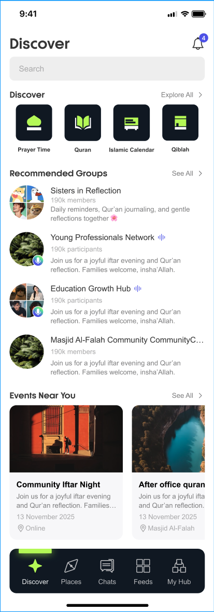
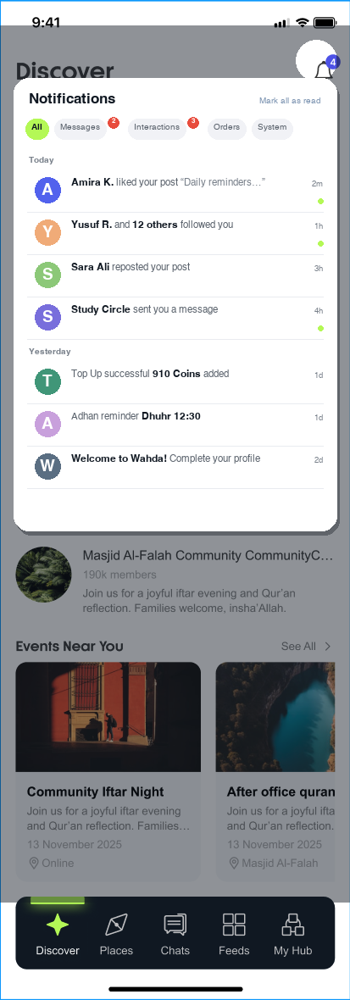

REQ-046 / 066 / 091：现状所有通知集中在 Discover 右上角站内信，无聚合收件箱；点赞/取消点赞还会产生重复通知（091）。改造为顶栏铃铛常驻（跨页未读红点）+ 点击展开聚合通知中心：All / Messages / Interactions / Orders / System 分 Tab，Today / Yesterday 时间分组，未读绿点，支持一键已读。
左：现状（铃铛为唯一入口，点开无聚合页）→ 右：更新后（铃铛聚光常驻 + 聚合通知中心浮层）。


| # | 更新点 | 说明 |
|---|---|---|
| 1 | 铃铛全局常驻 | 顶部铃铛在所有一级页常驻（本图为点开源），未读红点跨页跟随；底部各 Tab 徽章按类型分流（P002 已定规范）。 |
| 2 | 聚合通知中心 | 铃铛点开为全量收件箱浮层，Today / Yesterday 时间分组，替代「只有角标数字、无列表」的现状（REQ-066）。 |
| 3 | 分 Tab 分类 | All / Messages / Interactions / Orders / System 五类分 Tab，Interactions、Messages 带未读数徽章（REQ-046）。 |
| 4 | 未读绿点 | 未读条目右侧绿点标记，点单条即消；配合「Mark all as read」一键已读。 |
| 5 | 通知合并 | 同一用户对同一帖的反复点赞/取消只保留一条通知并聚合计数，撤回即删（REQ-091）。 |